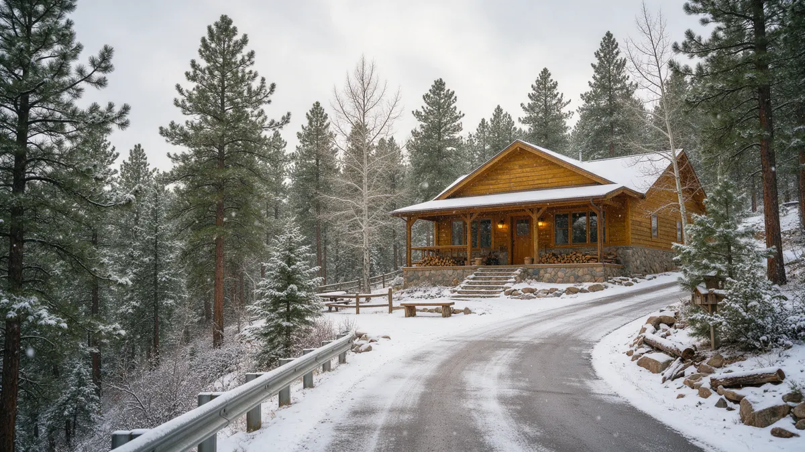

Conifer CO Water Leak Repair: A Practical Handbook for Mountain Homeowners

If you need Conifer CO water leak repair, start by working out whether the water is coming from your well side, your house plumbing or your septic side. Plumbing Pros Colorado is a referral line, so we connect you with independent local plumbers who handle the actual work. This handbook covers what to do first, what a plumber usually checks in foothills homes near Conifer Junction, and how to prepare before you call.
The first ten minutes at a Conifer property
Start at the pressure tank or the main shutoff where the line enters the house. Closing that valve stops water from flowing into the home, and on a well system you may also want to switch off the pump at its breaker so it does not keep running against an open leak.
Then look for the obvious: a wet ceiling, a dripping water heater, a damp crawlspace or a toilet that keeps refilling. Take a few photos with your phone. A clear picture of where the water showed up helps the plumber you are connected with plan the visit.
If the main valve itself is stuck or leaking at the stem, say so when you call. A worn valve is a common reason a simple shutoff turns into a longer visit, and the plumber may want to bring a replacement.
Warning signs that point to a hidden leak
- pump runs when no one is using water
- pressure tank cycles every few minutes
- damp spots on the yard above the buried line
- musty smell in a crawlspace
- water heater that never seems to catch up
- sudden drop in pressure at the far bathroom
Homes along Highway 73 and the side roads near Conifer Junction often have long runs between the well and the house. A leak in a buried section may never show at the surface, so the pump and tank behavior is usually the clue that matters most.
Write down the pressure reading on the tank gauge and how often the pump starts. Those two numbers give a plumber a head start before arriving at a hillside property where the drive may be steep and the well house a short walk away.
How a plumber usually narrows it down
A common first step is to shut off every fixture, then watch whether the pressure gauge falls or the pump restarts. Closing valves in stages separates the well line from the house piping, and that tells the plumber which half to open up.
Acoustic listening gear and thermal imaging can help find a leak inside a wall or under a slab without cutting blindly. On septic properties the plumber may also look at the cleanout and the line from the house to the tank before suggesting anything further.
A leak in a heated crawlspace can look different from one in a cold crawlspace, since warm air carries moisture upward. Tell the plumber which kind you have, and whether the space is reached from inside or from an outside hatch.
Questions to ask the plumber you are connected with
Ask which part of the system the leak is in, what the repair would involve, and whether anything else should be checked while access is open. Ask what the plumber needs from you, such as clear access to the crawlspace or the well pit.
If the work involves the well, pump or septic components, ask whether the plumber handles that scope or whether another trade should be brought in. Getting that answer early avoids surprises later.
It also helps to ask how the plumber will protect finished surfaces and where any cut openings will be. On a log or timber home, ask whether access can be gained from below rather than through a wall.
Protecting a Conifer home from the next freeze
Elevation near Conifer means cold snaps arrive early and linger in shaded canyons. Insulate exposed lines in crawlspaces, keep a trickle of heat in vacant cabins, and know where your shutoff is before you leave for a long trip.
Pipes that run along north-facing walls are the usual casualties when temperatures fall below 32°F for long stretches. If you find a frozen section, leave the faucet open, shut the main and wait for a plumber rather than using open flame.
Before leaving a cabin for the season, many owners also open a cold tap briefly to check that the pressure holds, then close it again. A pressure gauge that sags overnight is a quiet warning that something is leaking.
The mountain factor along US-285
Conifer sits in the foothills between the Front Range suburbs and the high country, and plumbing here behaves accordingly. Water lines run farther, ground freezes deeper, and a house on a shaded slope near Staunton State Park or Elk Creek may stay colder than one a mile away. Those differences are why a plumber asks about your lot as well as your pipes.
Power outages are another mountain reality. When the electricity goes out, a well pump stops, and when it returns, pressure can surge through the system. If you have lost power, check fixtures and the tank gauge once it comes back, and call if the pump will not stop cycling.
Frequently asked questions
My pump keeps turning on at night. Is that a leak?
It can be. If no fixture is running and the pump still starts, water may be escaping from a toilet, a fitting or a buried line. Turn off water use and watch the pressure gauge. A plumber can then isolate the section that is losing pressure. Watch for a few simple patterns. A pump that runs longer than usual, with gauge needles swinging wide, deserves a closer look from someone who works on well systems.
Should I shut off the well pump during a leak?
Many homeowners switch the pump breaker off after closing the main valve, so the pump does not keep running against an open break. If you are unsure which breaker it is, leave it and ask the plumber you are connected with. Septic trouble tends to build gradually, so note when drains first slowed and whether laundry days make it worse. That detail helps with diagnosis.
How do I know if the problem is septic and not a supply leak?
Supply leaks involve clean water appearing where it should not. Septic trouble usually shows as slow drains, gurgling, odors or soggy ground near the tank. A plumber can tell the two apart with a camera look and a pressure check. Pipe wrapped with heat tape should be checked each fall, because worn tape can fail without any warning light. A plumber can show you what to look for.
Can you send someone to Bailey or Pine?
We connect you with independent plumbers, and coverage depends on who is available. Mention your exact location, such as Pine or Bailey off US-285, when you call so the right match can be made. Coverage depends on which independent plumbers are available that day, so please give your cross streets or nearest landmark when you call.
Is a frozen pipe always a leak?
No. A pipe can freeze and hold water until it thaws, then split and leak. If a line is iced, shut the main, open a faucet, and have it checked once it warms. If the line has already split, shut the main and leave the faucet open so that the water has somewhere to go as the ice melts.
Plumbing services in Conifer
- Water Leak Repair
- Emergency Plumbing
- Drain Cleaning
- Water Heater Services
- Sewer Line Repair
- Gas Line Services
- Slab Leak Repair
- Pipe Repair & Replacement
- Toilet Repair
- Bathroom Plumbing
Nearby Colorado cities
- Water leak repair in Aurora
- Water leak repair in Loveland
- Water leak repair in Fort Collins
- Water leak repair in Dillon
Ready to talk to someone? Call (720) 794-0974 or visit get matched with a foothills plumber.